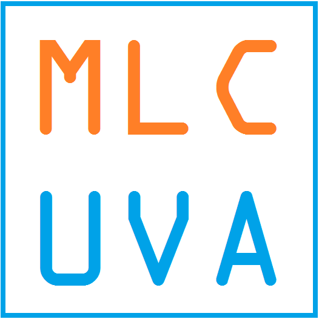

<section class="mat-typography">
  <div class="example-container">
    <app-header></app-header>
    <mat-sidenav-container class="example-sidenav-container">
      <section class="mat-typography">
        <div class="example-toolbar" style="background-color:#673ab7">
          <h1 class="mat-display-4" style="color:white;">Hey, I'm Chris!</h1>
          <h2 class="mat-display-1" style="color:white;">Data Scientist + Software Developer + Web Developer</h2>
        </div>
      </section>
      <div class="presentation-box">
        <div class="presentation-row">
          
          <div class="presentation-text">
            <h1> I <i class="fas fa-heart"></i> AWS </h1>
            <h2> Wouldn't have been able to complete hackathons without it. Spun up p2.xlarge EC2 instances for deep learning, used Lex for making multiple AI chatbots. Also used their machine learning sentiment analysis and brand detection machine learning tool. </h2>
          </div>
        </div>
        <div class="presentation-row">
          <div class="presentation-text">
            <h1> All Things Data Science </h1>
            <h2> Pandas, Numpy, Scikit Learn, Jupyter, Matplotlib. Checkout my Github for some of my projects with the tools. Have you seen <a href="">JupyterLabs?</a> </h2>
          </div>
          
        </div>
        <div class="presentation-row">
          
          <div class="presentation-text">
            <h1> Keras and Deep Learning </h1>
            <h2> Feel in love when I was able to create a simple self driving car in GTA V, SantosNet. I believe that deep learning technology is overhyped in the short term, but under hyped in the long term. </h2>
          </div>
        </div>
        <div class="presentation-row">
          <div class="presentation-text">
            <h1> Machine Learning Club at UVA </h1>
            <h2> Founder and President. We host speakers, organize workshops, and attend hackathons. Let me know if you're interesting in sponsoring our organization! </h2>
          </div>
          
        </div>
      </div>
      <app-projects></app-projects>
      <app-footer></app-footer>
    </mat-sidenav-container>
  </div>
</section>